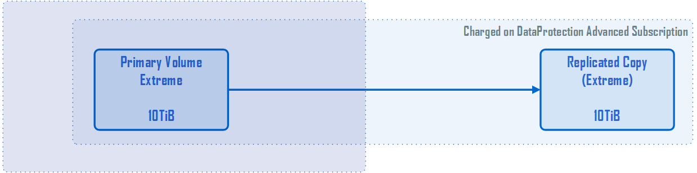
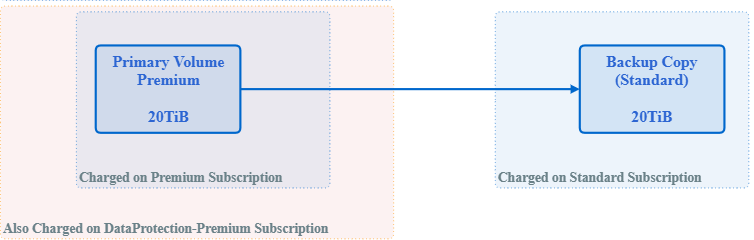

Billing accounts, subscriptions, services, and performance
Contributors
 Download PDF of this page
Download PDF of this page
A subscription storage service is billed to a billing account. Each billing account is linked to a tenant. A billing account can be billed for one or more subscriptions.
A subscription refers to a group of storage services that are subscribed to and billed as one package. A subscription:
-
Has one or more storage services
-
Has a committed duration with a subscription end date
-
Can have add-ons associated with the subscription
| If storage is required in multiple data centers, a separate subscription is required for each data center, with separate commitments. |
A storage service is a subscribed-to committed storage capacity with an associated performance level. NetApp Service Engine offers file and block storage at extreme, extreme-tiering, premium, premium-tiering, and standard performance levels, and object storage at an object performance service level.
The extreme-tiering and premium-tiering performance levels enable you to reduce your storage footprint and associated costs by monitoring and tiering your cold or inactive data to low-cost object storage tiers. The tiering policy is set to auto, where data left inactive for 31 days is tiered by default. You can modify this time period to be any number of days from 3 to 61 days.
When created, file and block storage items are associated with a performance level. Moving workloads between performance service levels is possible as requirements change. The extreme, extreme-tiering, premium, premium-tiering, and standard performance levels offer different levels of I/O performance (IOPS) and throughput (MBps) so storage can be tailored to requirements.
Burst usage is allowed on services up to a certain point; it is monitored and billed at separate charge rates (as defined in the subscription). For more information about capacity and usage, see Committed, consumed, and burst capacity, and excess usage. DP services that support backups and disaster recovery are also offered.
Committed, consumed, and burst capacity, and excess usage
Consumed capacity is how much capacity has been allocated (but not necessarily used). Committed capacity is the capacity that is committed to in a subscription; the subscriber is billed at a fixed rate for the committed capacity, regardless of how much is used.
Burst capacity is the capacity above the committed capacity that is allocated.
Burst capacity = consumed capacity – committed capacity
NetApp Service Engine monitors consumed capacity, checks the usage against the subscription, and bills for any consumed capacity that exceeds the committed capacity at the burst rate specified in the subscription. Usage is captured in five-minute increments and a daily summary is submitted to the billing engine for burst charge calculation. (Billing time is based on the local time for the underlying infrastructure for the NetApp Service Engine installation. )
| In addition to primary storage, features such as snapshots, backup, and disaster recovery replicas contribute to and are included in usage calculations. |
Burst usage notifications
As burst usage incurs additional cost, the NetApp Service Engine GUI displays:
-
A notification when a proposed change in provisioning will result in using burst capacity.
-
A notification to a Customer Admin when a subscription has gone in to burst usage.
-
How many days and in what quantity burst usage has been used for a service, in the Capacity Report. For more information see Capacity usage.
Notification when a proposed change will result in using burst capacity
This figure shows an example of a notification displayed when a proposed provisioning change will cause a subscription to go into burst. You can choose to continue knowing that it will put the subscription into burst or choose not to continue with the action.

The following table lists when such burst notifications are displayed.
| Action | Impact at the Source | Impact at the Destination |
|---|---|---|
Create or resize a share/disk. |
Exceeds commitment on the service level in the zone. |
n/a |
Move a share/disk to a new service level. |
Exceeds commitment on the service level in the zone. |
n/a |
Create or resize a share/disk on a file server/block store with disaster recovery enabled. |
|
Exceeds commitment on the service level in the destination zone by the automatically created destination share/disk. |
Move a share/disk to a new service level on a file server/block store with disaster recovery enabled. |
|
Exceeds commitment on the service level in the destination zone by the relocated destination share/disk. |
Enable backups on a share/disk. |
Exceeds commitment for DP. |
Exceeds commitment on the service level in the destination zone by the automatically created destination share/disk. |
Create a new object store tenancy. |
The commitment for object capacity could be exceeded. |
n/a |
Increase the quota on an object store tenancy |
The commitment for object capacity could be exceeded. |
n/a |
Notification when subscription is in burst
The following notification banner is displayed when a subscription is in burst. The notification is displayed to the customer administrator for the tenancy and is displayed until the notification is acknowledged.

Data protection
DP refers to methods that support back up of data and the ability to recover it if required.
NetApp Service Engine DP features include:
-
Snapshots of disks and shares
-
Backups of disks and shares (requires DP service as part of the subscription)
-
Disaster recovery for disks and shares (requires DP or DP Advanced service as part of the subscription)
Snapshots
Snapshots are point-in-time copies of data. Snapshots can be cloned to form a new disk or share with the same or similar features.
Snapshots can be created adhoc or automatically on a schedule as defined in a snapshot policy. The snapshot policy determines when snapshots are captured and how long they are retained.
| Snapshots contribute to the consumed capacity of a service. |
Backups
Backup refers to taking a copy of an item, replicating it, and storing the copy in a zone other than the original zone, which has the respective protocol enabled (in case of block storage only) and is non-MetroCluster enabled. NetApp Service Engine offers backups on file and block storage (requires a DP service on the subscription). Backups of shares/disks are stored in the backup zone on the lowest cost performance tier (that is Standard) on subscription.
Backups can be configured at the time of creation of a new share/disk or later added to an existing share/disk.
Notes:
-
Backups occur at a fixed time, around 0:00 UTC.
-
Backups occur as defined by the backup policy set for the share/disk. The backup policy determines:
-
If backups are enabled
-
The zone to which the backups are replicated; a backup zone is any zone in NetApp Service Engine other than the zone in which the original share or disk resides, which has the respective protocol enabled (in case of block storage only) and is non-MetroCluster enabled. Once set, the backup zone cannot be changed.
-
The number of backups to keep (retention) of each interval (daily, weekly, or monthly).
Scheduled backups are taken regularly and cannot be deleted but will be aged out as determined by the retention policy.
-
-
Backup replication occurs daily.
-
Backups of disks or shares cannot be configured in an NetApp Service Engine instance that contains only one zone.
-
Deleting a primary share or disk will delete all associated backups.
-
Backups contribute to the total consumed capacity. In addition, backups incur cost at the DP subscription rate. See also Data Protection, Consumed Capacity, and Charges.
-
Restore from backup: raise a service request to restore a share or disk from backup.
Disaster recovery
Disaster recovery refers to the ability to recover to normal operations in the event of a disaster.
NetApp Service Engine supports two forms of disaster recovery: Asynchronous and Synchronous.
| Support for disaster recovery is dependent on the infrastructure supported by the NetApp Service Engine instance. |
Disaster recovery—asynchronous
NetApp Service Engine supports asynchronous disaster recovery by providing the ability to:
-
Asynchronously replicate primary volumes to a disaster recovery zone
-
Failover/failback (available by service request only)
Asynchronous disaster recovery is available on file and block storage and requires a DP service on the subscription.
The disaster recovery zone must be a zone within NetApp Service Engine that is different to the zone in which the primary volume is created, and should not be a MetroCluster partner if the source zone is MetroCluster enabled. Disaster recovery replicas of shares/disks are stored in the disaster recovery zone at the same performance tier as the original share/disk.
Enabling asynchronous disaster recovery replication for a primary volume requires:
-
Configuring the file server or block store on which the volume resides to support disaster recovery.
-
Enabling or disabling disaster recovery replication of the file share or disk. By default, shares and disks are enabled for disaster recovery replication if disaster recovery is configured.
Configure file server or block store to support asynchronous disaster recovery
Enable asynchronous disaster recovery on a file server or block store at creation or at a later date. After it is enabled, disaster recovery cannot be disabled, and the disaster recovery zone cannot be changed. The disaster recovery schedule specifies how often the data is replicated to the disaster recovery location (hourly, four hourly, or daily).
Enable asynchronous disaster recovery on file share or disk
A file share or disk can only be configured for asynchronous disaster recovery replication if the parent file server or block store is first configured for asynchronous disaster recovery. By default, if replication is enabled in the parent, replication is enabled in the file shares or disks that the parent hosts. You can exclude replication of a particular share or disk by disabling disaster recovery on that share/disk. It is possible to toggle between enabling and disabling replication on these shares/disks.
Notes:
-
Deleting a primary file server or block store will delete all disaster recovery replicated copies.
-
Only one disaster recovery zone can be configured per file server or block store.
-
Disaster recovery copies contribute to the total consumed capacity. In addition, disaster recovery incurs cost at the disaster recovery subscription rate. See also Data Protection, Consumed Capacity, and Charges.
Disaster recovery—synchronous
MetroCluster is a DP feature which synchronously replicates data and configuration between two distinct zones which reside in separate locations or failure domains. In the event of a disaster at one site, an administrator can enable data to be served from the surviving site.
NetApp Service Engine managed sites that are configured with MetroCluster can support synchronous disaster recovery for File and Block storage in the following way.
-
Zones can be configured to support synchronous disaster recovery.
-
Disks/shares created in these zones synchronously replicate to the disaster recovery zone.
Notes:
-
Synchronous disaster recovery incurs costs at synchronous disaster recovery subscription rate. See also Data Protection, Consumed Capacity, and Charges.
Data protection, consumed capacity, and charges
The figures in this section describe how DP charges are calculated.
Disaster recovery
Asynchronous disaster recovery
In asynchronous disaster recovery, usage and cost is made up of the following charges:
-
Original volume capacity charged at the performance tier on which it resides.
-
Disaster recovery copy charged at the same performance tier at the destination or disaster recovery zone (disaster recovery copies are stored at the same tier).
-
DP service charge (for the capacity of the original volume).

Synchronous disaster recovery
In synchronous disaster recovery, usage and cost is made up of the following charges:

Backup
In backup, usage and cost are made up of the following charges:
-
Original volume capacity charged at the performance tier on which it resides.
-
Backup volumes charged at the lowest available performance tier (backup copies are stored on the lowest cost available tier).
-
DP service charge (for the capacity of the original volume).

 Edit on GitHub
Edit on GitHub